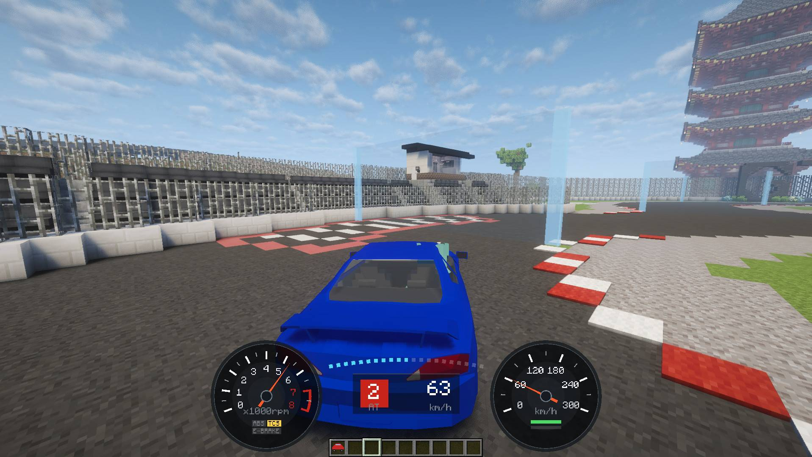

From download to driving in four steps.ダウンロードから走り出すまで、4 ステップ。
Every version is on the same page. Forge and NeoForge need no other mods; Fabric needs Fabric API.どの版も同じページから。Forge と NeoForge は前提 MOD がいりません。Fabric は Fabric API が必要です。
| Minecraft | Forge | NeoForge | Fabric |
|---|---|---|---|
| 1.20.1 | Supported対応47.4.22 or later47.4.22 以上 | — | — |
| 1.21.1 | — | Supported対応21.1 or later21.1 以上 | Supported対応Loader 0.16.14 or later + Fabric APILoader 0.16.14 以上 + Fabric API |
| 26.3 | Supported対応66.1.5 or later66.1.5 以上 | Supported対応26.3.0.101 or later26.3.0.101 以上 | Supported対応Loader 0.20.1 or later + Fabric APILoader 0.20.1 以上 + Fabric API |
Using shader packs? See theシェーダーパックを使う方は shader pack pageシェーダーのページ.へ。
One car pack jar works on every version and loader.カーパックは 1 つの jar で、どの版・どのローダーでも動きます。
| Car packカーパック | Forge | NeoForge | Fabric |
|---|---|---|---|
| Basic Car Pack | Supported対応1.20.1 / 26.3 | Supported対応1.21.1 / 26.3 | Supported対応1.21.1 / 26.3 |
| Example Car Pack | Supported対応1.20.1 / 26.3 | Supported対応1.21.1 / 26.3 | Supported対応1.21.1 / 26.3 |
Car packs made by players. Check each page for supported versions.プレイヤーが作ったカーパックです。対応する版は、それぞれのページで確かめてください。
Add the Basic Car Pack too if you want the 911 and the Prado.911 とプラドに乗るなら、Basic Car Pack も一緒に。
Each car has its own item in the creative inventory.クリエイティブインベントリに、車種ごとのアイテムが並びます。
Right-click the ground to place it, then right-click the car to get in.地面を右クリックで置き、車を右クリックで乗ります。
Seats two, and whoever gets in first drives. Shift + attack picks the car up with its setup.2 人乗りで、先に乗った方が運転。Shift ＋ 殴るで、セッティングごと回収できます。
Server settings are in config/kurumamod-common.toml (abandoned car cleanup, car-to-car collisions).サーバーの設定は config/kurumamod-common.toml にあります（放置車両の削除、車同士の当たり判定）。
/kuruma-admin point. Face the racing direction and run /kuruma-admin course create <name>, then add checkpoints in order with /kuruma-admin course checkpoint <name>.各ラインの両端を /kuruma-admin point で指定し、走る向きを向いて /kuruma-admin course create <名前>。続けてチェックポイントを通る順に /kuruma-admin course checkpoint <名前>。Bug reports, setups and new car packs all land there first.不具合の報告も、セッティングの共有も、新しいカーパックの話題も、まずはここで。